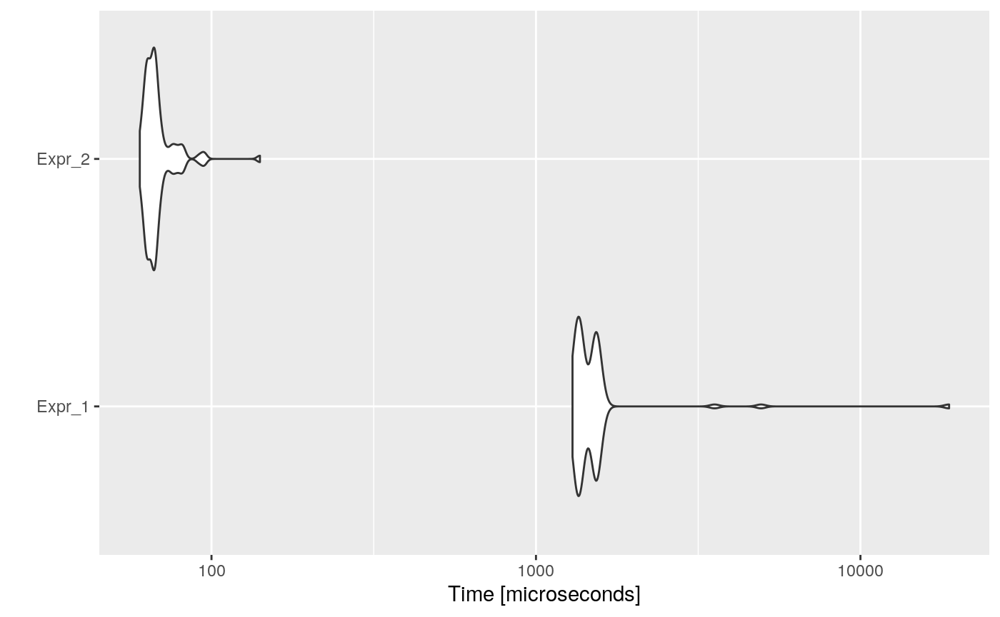

The removal of a value allocated to a variable when it is not being read by any following instruction is called Dead Store Elimination. This Optimization is necessary as it saves processor time and memory which ultimately results in the faster execution of the program.
Dead Store Elimination is an optimization that intends to remove an assignation of a variable that is not read by any subsequent instruction.
For instance, consider the following code:
foo <- function(x) {
i <- 8818
return(x ^ 3)
}Variable i is never used, so this assignation could be removed, resulting in:
foo <- function(x) {
8818 # this line can be removed by Dead Expression Elimination
return(x ^ 3)
}After applying other optimizations, such as Constant Propagation, some variables become dead stores.
For example, consider:
foo <- function(x) {
i <- 0
n <- 8818
res <- 0
while (i < n) {
res <- res + i
i <- i + 1
}
return(res)
}After Constant Propagation we would get:
foo <- function(x) {
i <- 0
n <- 8818
res <- 0
while (i < 8818) {
res <- res + i
i <- i + 1
}
return(res)
}And thus, n would become a dead store.
Consider the following example:
code <- paste(
"foo <- function(n) {",
" i <- 0",
" res <- 0",
" while (i < n) {",
" res <- res + i",
" i <- i + 1",
" a <- i + 1",
" }",
" res",
"}",
"foo(10000)",
sep = "\n"
)
cat(code)## foo <- function(n) {
## i <- 0
## res <- 0
## while (i < n) {
## res <- res + i
## i <- i + 1
## a <- i + 1
## }
## res
## }
## foo(10000)Then, the automatically optimized code would be:
opt_code <- opt_dead_store(list(code))
cat(opt_code$codes[[1]])## foo <- function(n) {
## i <- 0
## res <- 0
## while (i < n) {
## res <- res + i
## i <- i + 1
## i + 1
## }
## res
## }
## foo(10000)And if we measure the execution time of each one, and the speed-up:
bmark_res <- microbenchmark({
eval(parse(text = code))
}, {
eval(parse(text = opt_code))
})
autoplot(bmark_res)
speed_up(bmark_res)## Min. 1st Qu. Median Mean 3rd Qu. Max.
## Expr_2 20.26309 20.3466 19.20069 20.22119 18.21587 39.05164A dead store will be an assignment of a variable that is not read by any subsequent instruction. To be considered dead store, the assignment must be given within the definition of a function, since otherwise, the assignment would affect the global environment and therefore could be aimed to be used by the user.
The opt_dead_store detects which code chunks are function definitions. Then for each function, the optimizer gets it body, detects dead stores, i.e., assigned but not read variables, and eliminates them.
Intelligent dead store?
If within a function, a variable is assigned multiple times, but just the last assignation is read, then the optimizer could keep just the last one.
For example:
foo <- function() {
a <- 8
a <- 8818
return(a ^ 2)
}Would be equivalent to:
foo <- function() {
8
a <- 8818
return(a ^ 2)
}Remove variables that do not affect the returned value?
Eliminate all those variables that are assigned, read or not, but that do not affect the value returned by the function.
For example:
foo <- function() {
a <- 8818
b <- 0
c <- 1000
res <- 0
for (b < c) {
b <- b + 1
res <- res + b
}
return(a ^ 2)
}Would be equivalent to:
foo <- function() {
a <- 8818
return(a ^ 2)
}